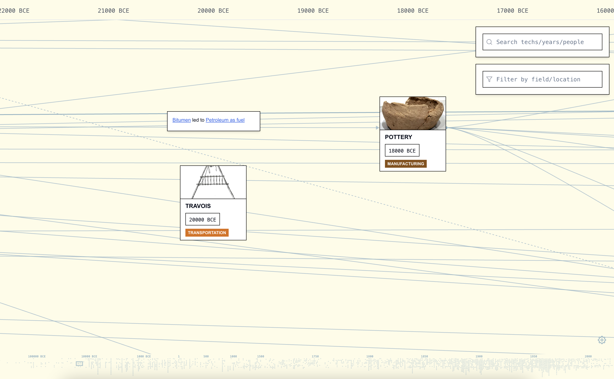
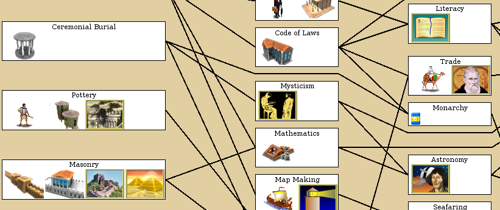
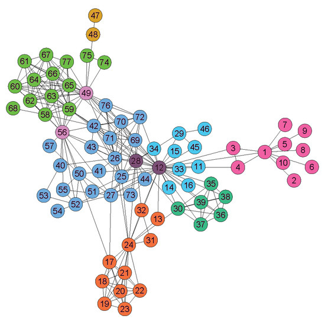
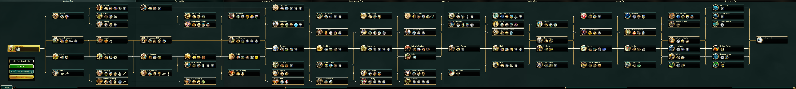
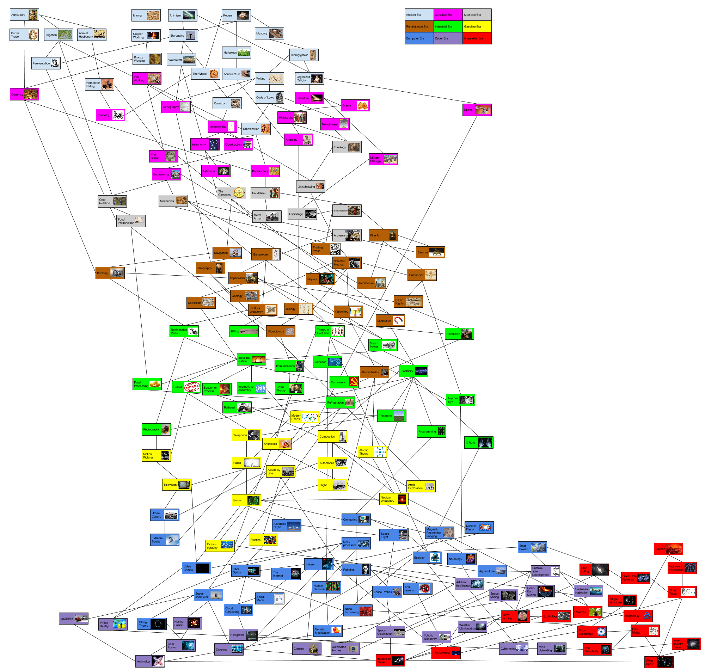
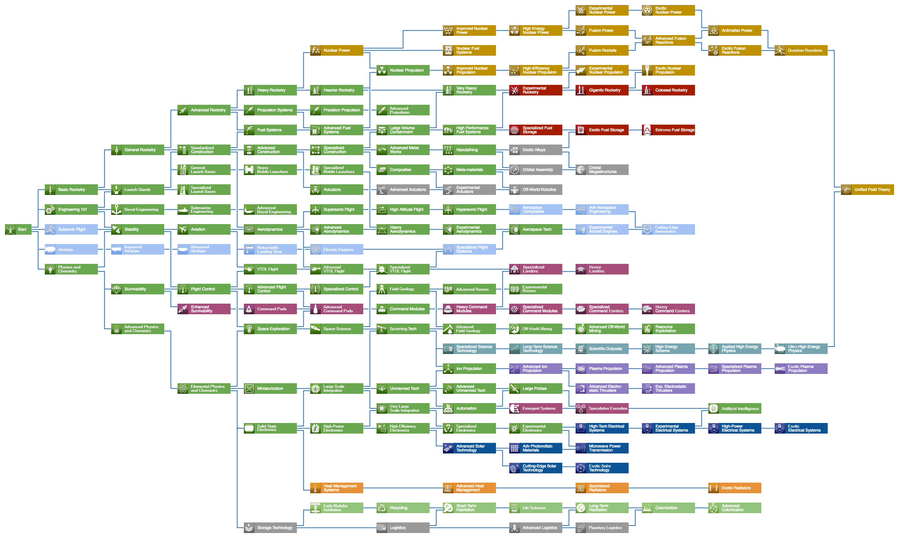
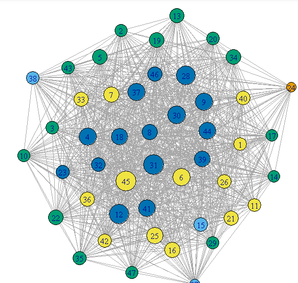

Overview
A 0–1 Product, 3 People, 1 Idea
Humanity's Tech Tree grew out of Richard Socher's fascination with how technologies connect across history. His goal was to build a platform where people could explore, debate, and document human innovation as a living system.
As the sole designer, I shaped the product from the ground up by prototyping rapidly, testing with users, and iterating until we had something real to ship.
Problem
Tech trees exist everywhere. None of them work as products.
They show up in games, research papers, and data visualizations, but they're all static, overwhelming at scale, and impossible to contribute to. No entry points, no interaction, no community.

Humanity's Tech Tree
Kerbal Space Program
Network Graph
Civilization VI
Knowledge Graph
Civilization V
Data VisualizationSolution
Layered exploration + community integration.
I redesigned the experience around three pillars: structured navigation, progressive information layering, and contribution-driven engagement.
How might we display and organize nodes to show parts, focus areas, and sections?
Each node reveals its full context on click: description, era, impact score, notable contributors, prerequisites, and related technologies. Nodes are grouped by field and section, so users can see how important each innovation is and where it fits in the larger system.
How might we navigate a timeline that spans thousands of years and surface hundreds of interconnected nodes?
Node search, era filtering, zoom controls, and free scrolling let users move through the timeline at any scale. Progressive disclosure keeps complexity manageable.
How might we drive engagement, personalization, and retention?
Gamified dashboards, contribution tracking, ranking systems, and personalized interaction history give users reasons to come back and make the experience feel like their own.
How might we go beyond the map and create a space for discussion, debate, and connection?
Discussion threads, topic-based conversations, and community profiles turn the graph into a place where people connect over shared interests in technology and innovation.
Research
Ship first, then learn.
We shipped the first version and let real people use it. 2,500+ interactions gave us signal. From there, we dug deeper.
Phase 1: Launch & Initial Data
We first selected 7 people for preliminary testing. Our hypothesis was that tech trees would attract professionals working in STEM fields who want to document their journeys, so we targeted 30–40+ year olds across research, engineering, and science. We shipped v1 and put it in front of them. It was confusing, had poor navigation, bad UI, and needed a lot of work.
Professional Background vs. Perceived Complexity
Users with more technical expertise found the navigation harder to understand and rated the interface as more complex.
From preliminary testing across 7 participants (ages 31–40+), we collected quantitative ratings and qualitative feedback.
Common Feedback Themes (7 participants)
Navigation and complexity were the top pain points. Lower-rated users consistently cited confusion.
Key Takeaways
The biggest signal: 5 out of 7 participants found navigation confusing and felt there was too much going on. Complexity was the top barrier to satisfaction, and lower-rated users consistently cited the same pain points.
"Great idea, has a lot of potential, needs a lot of work." - Biostatistician, AI researcher
Phase 1.5: Testing & Other Ideas
In attempts to solve the problem of clustered nodes and increase engagement with gamification, I brought in the idea of a game led by extensive motion graphics and effects, with information stored within a 3D world built in Three.js and Blender. Users could orbit, zoom in, and explore by moving a boat to sail to different landmarks, each representative of an era, to discover technologies.
Filter Effects Tested
Filter A: Warm Teal
A warmer, saturated tone applied across the 3D world. Tested for visual warmth and approachability.
Filter B: Cool Blue
A cooler, more muted tone. Tested for contrast and readability. Both filters were ultimately scrapped due to accessibility concerns across different screens.
Why scrap it?
The 3D environment was visually striking, but it added friction instead of reducing it. Users spent time orienting themselves in the space rather than exploring content.
What carried over into the shipped product
Spatial hierarchy → Timeline zoom levels. The depth layers in the 3D world became the zoom-based progressive disclosure in the 2D platform.
Blender assets → Visual identity. The low-poly material language, lighting, and texture work from Blender shaped the platform's overall aesthetic direction.
Phase 2: User Interviews
7 wasn't enough. This wasn't just a graph for researchers. It was a product for everyone. We expanded to 15 participants (ages 18–50): students, creatives, non-technical professionals. From that group, we focused on two for in-depth, in-person interviews.
Where participants suggested further development
Structures participants were most excited about
*Some questions were optional. Participants could opt out of individual responses.
In-Depth Interviews

The Evangelist
Male, 25 · AI Researcher · San Francisco
- Saw the platform as a passion project to share with coworkers and his Twitter community
- Suggested it as a connections hub, linking top scientists and VCs with aspiring builders
- Competition and replies drove retention: he kept coming back to see if anyone responded to his contributions

The Explorer
Female, 19 · Sociology Major · UC Berkeley
- Not familiar with the tech world and came from a humanities background
- Used it to visualize concepts from her earthquakes and astronomy breadth classes
- Didn't understand topics like AGI, but loved being able to ask questions to people actually in the field
Key Takeaways
Accessibility gaps. One participant was colorblind and struggled to distinguish node categories by color alone.
Language support requested. Multiple participants asked for different language versions, signaling global interest beyond English-speaking users.
Retention is social. Users who engaged with discussion features reported coming back more often. Community drove repeat visits, not just content.
The audience is broader than expected. Non-technical users found just as much value as researchers. The platform resonated across backgrounds.
Phase 3: User Flow & Usability Testing
We tracked how users navigated the platform during guided walkthroughs: where they entered, what they clicked, and where they dropped off.
Observed User Flow
Everyone explored the landing and timeline, but engagement tapered at node detail and search. The only discussion option was an external Discord link. No one clicked it. The flow had a ceiling.
Design Systems & Decisions
What the research told us to build.
Every major design decision traced back to a research finding.
14/15 participants
Wanted simpler navigation
Simpler, Minimalist Design
Clean layout, structured zoom, breathing room.
0% clicked external link
Discord was a dead end
In-Platform Community
Built-in messaging, threads, and profiles to grow community directly on the platform.
15/15 participants
Wanted to contribute nodes
User-Generated Nodes
Full metadata: era, impact, prerequisites, contributors.
Competition + replies
Users came back for social feedback
Gamified Dashboard
Rankings, contribution tracking, interaction history.
1 colorblind participant
Couldn't distinguish node categories by color alone
Accessible Visual System
Accessible monochrome palette designed with differentiating shapes and labels.
AI Features
Designing for AI-native creation.
As the tree grew, manually adding nodes became a bottleneck. I designed an AI Node Builder that lets users describe any technology in natural language and generates a complete node.
How might we use AI to lower the barrier to contributing knowledge?
The AI Node Builder takes a single prompt and generates a complete node. Every AI-generated node is flagged for human review before going live.
AI as co-creator, not replacement. Users who found contributing intimidating could now start their ideas somewhere, with an AI generated assistance. All AI-generated content still goes through human review before publishing, keeping the community in control of what makes it onto the tree.
Outcome
What shipped. What I learned.
Working under Richard Socher was a great opportunity to learn how research can be made visual and accessible. The most valuable user insights came not from surveys, but from sitting with participants in person and listening to them think aloud. Design is not linear — it's a lot of editing, testing, and revisiting decisions until it feels right. And one colorblind participant reminded me that accessibility is never optional.
Get in touch
Wanna learn about the different researches and insights that were brought up in weekly meetings with the team and talking to researchers in different industries?
Reach out to me at julia[dot]liu05[at]berkeley.edu